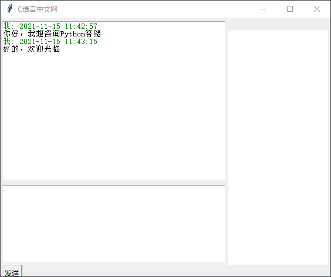
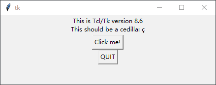
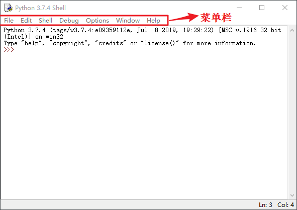

Tkinter是什么
在《GUI是什么》一节，我们了解了 GUI（图形用户界面）的相关概念，接下来我们正式介绍本教程的主人公 —— Tkinter。
Tkinter（即 tk interface，简称“Tk”）本质上是对 Tcl/Tk 软件包的 Python 接口封装，它是 Python 官方推荐的 GUI 工具包，属于 Python 自带的标准库模块，当您安装好 Python 后，就可以直接使用它，而无须另行安装。
作为一款 Python GUI 工具，Tkinter 拥有良好的跨平台性，支持 Windows、Linux、Mac 平台，它传承了 Python 语法简洁、代码易读的基本特点。
与其他编程语言的 GUI 工具包相比，Tkinter 编码效率高，能够实现快速开发的目的，非常适合初学者学习。Tkinter 使用纯 Python 语言开发，与 C/C++ 开发的 Qt 框架相比，Tkinter 有自身的局限性，比如性能、功能丰富程度等都不及 Qt，因此它只适合开发一些简单的程序，比如计算器的界面，或者一个简易的聊天窗口等。如下图所示：
通常情况下不会使用 Tkinter 来开发较为复杂的桌面应用程序，这是由 Python 语言自身特点决定的，作为一种解释型语言和脚本语言，Python 并不具备开发复杂桌面应用的优势。
但“麻雀虽小，五脏俱全”，Tkinter 作为 Python GUI 开发工具之一，它具有 GUI 软件包的必备的常用功能。比如，它提供了十多种不同类型的窗口控件、窗口布局管理器、事件处理机制等，加之其开发效率高、代码简洁易读， Tkinter 自问世以来，备受大家青睐。当您想要制作一个小工具的界面或者比较简单的桌面应用程序时，那么Tkinter 将是一个不错的选择。
在 CMD 命令行运行以下命令，可以查看 Tkinter 的相应版本，同时也会显示一个简易的窗口，命令如下：
Python 官方提供的 IDLE（Integrated Development and Learning Environmen，集成开发和学习环境），就是使用完全使用 Tkinter 开发而成的，如下所示：
无论您是学习 Tkinter ，亦或是学习其他语言的 GUI 软件包，下列给出几点学习建议，帮助您找到学习 GUI 编程的方法：
Tk 提供了诸多窗口控件（后续将详细讲解），这些控件形状各异，功能也不尽相同，在编写 GUI 程序的过程中，您可以把这些控件看做一块块的“积木”，而搭建积木这项工程，不仅要求您了解每块积木的形状（即控件作用），更重要是学会搭建积木的方法，学会如何摆放这些积木。只有这样，最终才能将这些积木构建一个完整、美观的“图形界面”。
Tkinter（即 tk interface，简称“Tk”）本质上是对 Tcl/Tk 软件包的 Python 接口封装，它是 Python 官方推荐的 GUI 工具包，属于 Python 自带的标准库模块，当您安装好 Python 后，就可以直接使用它，而无须另行安装。
作为一款 Python GUI 工具，Tkinter 拥有良好的跨平台性，支持 Windows、Linux、Mac 平台，它传承了 Python 语法简洁、代码易读的基本特点。
与其他编程语言的 GUI 工具包相比，Tkinter 编码效率高，能够实现快速开发的目的，非常适合初学者学习。Tkinter 使用纯 Python 语言开发，与 C/C++ 开发的 Qt 框架相比，Tkinter 有自身的局限性，比如性能、功能丰富程度等都不及 Qt，因此它只适合开发一些简单的程序，比如计算器的界面，或者一个简易的聊天窗口等。如下图所示：

图1：Tkinter开发的聊天窗口
图1：Tkinter开发的聊天窗口
通常情况下不会使用 Tkinter 来开发较为复杂的桌面应用程序，这是由 Python 语言自身特点决定的，作为一种解释型语言和脚本语言，Python 并不具备开发复杂桌面应用的优势。
但“麻雀虽小，五脏俱全”，Tkinter 作为 Python GUI 开发工具之一，它具有 GUI 软件包的必备的常用功能。比如，它提供了十多种不同类型的窗口控件、窗口布局管理器、事件处理机制等，加之其开发效率高、代码简洁易读， Tkinter 自问世以来，备受大家青睐。当您想要制作一个小工具的界面或者比较简单的桌面应用程序时，那么Tkinter 将是一个不错的选择。
在 CMD 命令行运行以下命令，可以查看 Tkinter 的相应版本，同时也会显示一个简易的窗口，命令如下：
python -m tkinter显示出的窗口如下所示：

图2：显示的窗口
图2：显示的窗口
Python 官方提供的 IDLE（Integrated Development and Learning Environmen，集成开发和学习环境），就是使用完全使用 Tkinter 开发而成的，如下所示：

图3：Python IDLE集成开发环境
图3：Python IDLE集成开发环境
无论您是学习 Tkinter ，亦或是学习其他语言的 GUI 软件包，下列给出几点学习建议，帮助您找到学习 GUI 编程的方法：
Tk 提供了诸多窗口控件（后续将详细讲解），这些控件形状各异，功能也不尽相同，在编写 GUI 程序的过程中，您可以把这些控件看做一块块的“积木”，而搭建积木这项工程，不仅要求您了解每块积木的形状（即控件作用），更重要是学会搭建积木的方法，学会如何摆放这些积木。只有这样，最终才能将这些积木构建一个完整、美观的“图形界面”。
本套教程，在介绍控件用法的同时，更注重讲解“搭建”方法，让您真正明白和掌握 GUI 编程。
Tkinter 中会涉及一些 GUI 编程的概念，比如根窗口（root）、顶级窗口（TopLeve）、Canvas（画布）、Frame（容器）、标签（Lable）等，对这些概念的理解，将有助于您理解 GUI 编程的逻辑思路，这样当您在使用 Tkinter 编程时就会得心应手。关注公众号「站长严长生」，在手机上阅读所有教程，随时随地都能学习。内含一款搜索神器，免费下载全网书籍和视频。

微信扫码关注公众号